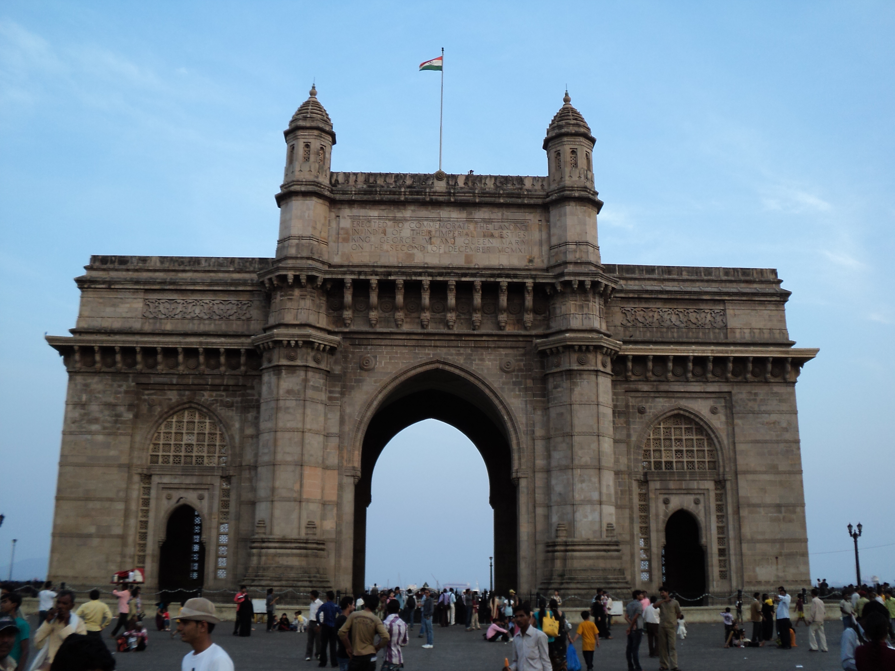

MUMBAI HERITAGE • SITE 01
Gateway of India

Description
The Gateway of India is one of the most recognizable landmarks of Mumbai. Located on the waterfront at Apollo Bunder in South Mumbai, the monument overlooks the Arabian Sea and is closely associated with the city's historic waterfront.
Built in an Indo-Saracenic architectural style, the monument has become an important tourist attraction and a popular symbol of Mumbai.
History
The Gateway of India was built to commemorate the visit of King George V and Queen Mary to India in 1911. The foundation stone was laid in 1911, while the monument was completed in 1924.
Over the years, the Gateway of India became an important historical landmark and remains one of the most visited heritage attractions in Mumbai.
Location
Apollo Bunder, Colaba, Mumbai, Maharashtra.